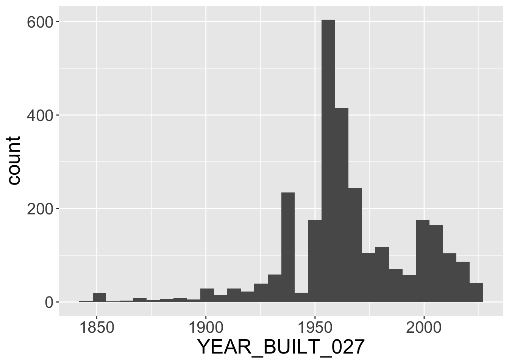
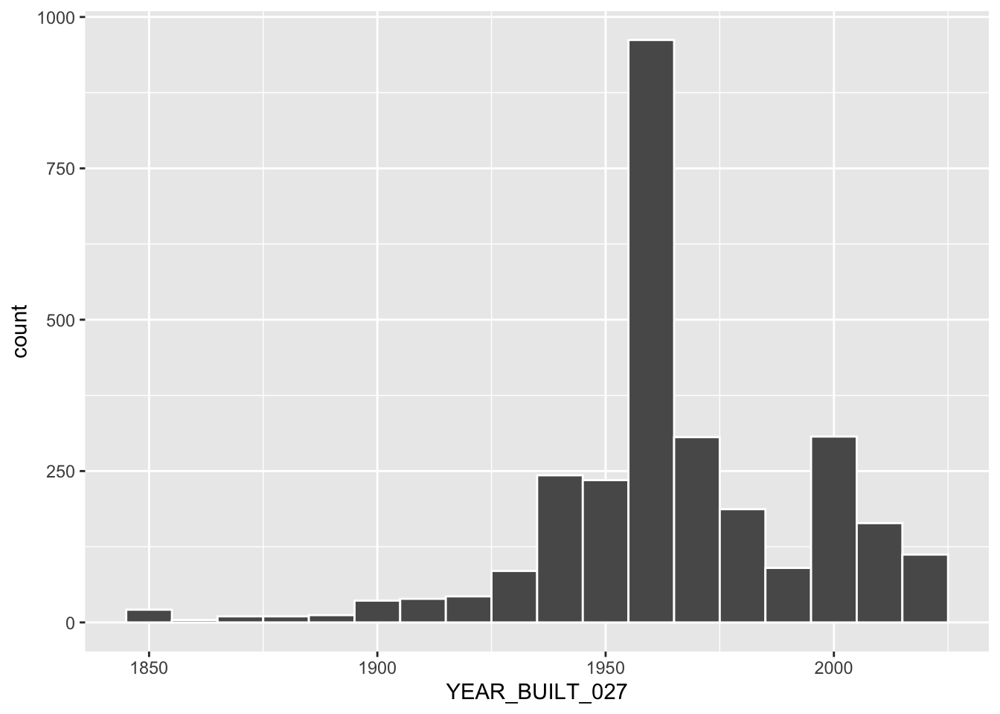
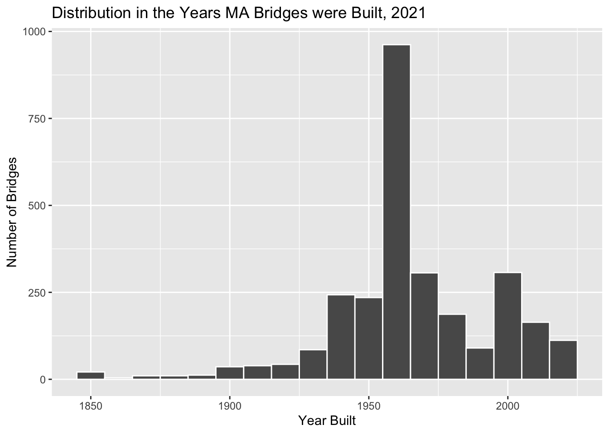
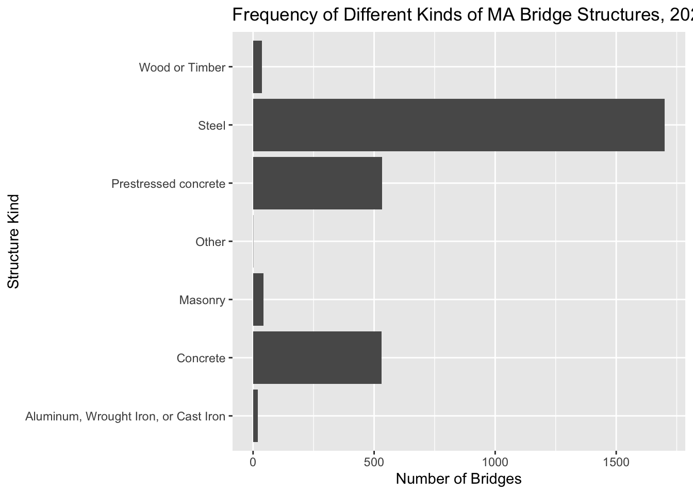
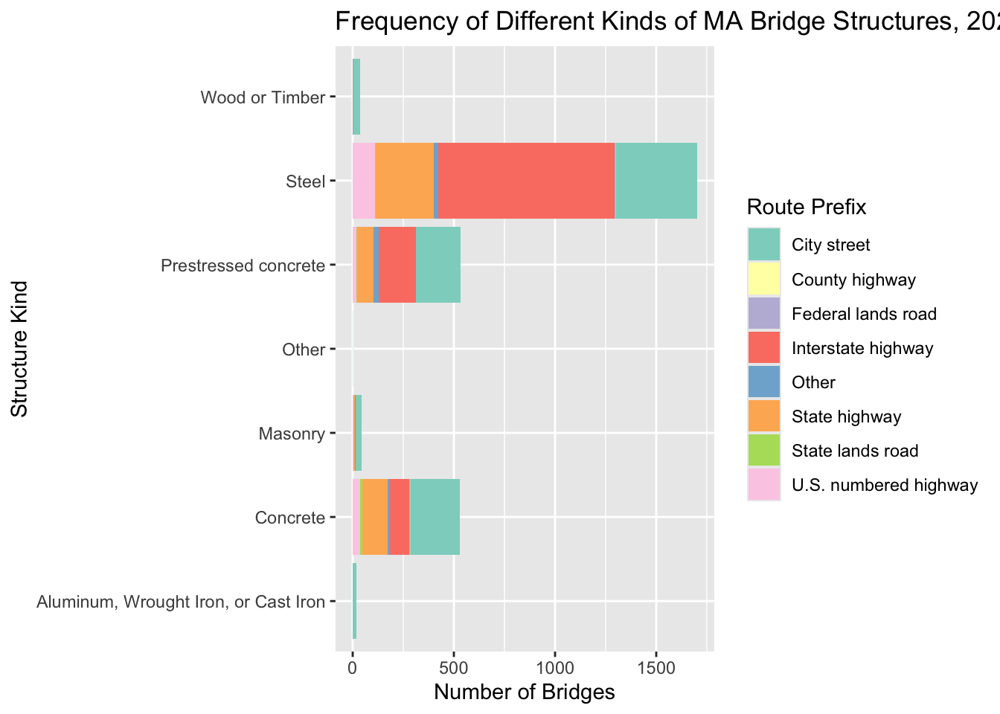
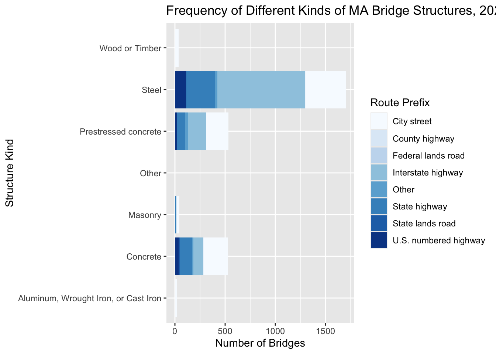
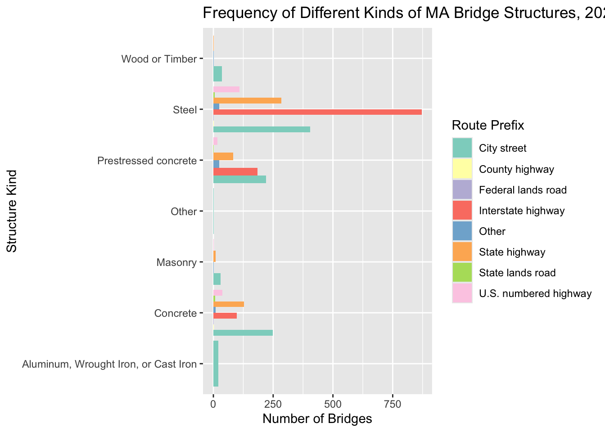

Rows: 14 Columns: 2
── Column specification ────────────────────────────────────────────────────────
Delimiter: ","
chr (1): COUNTY_CODE_003_L
dbl (1): COUNTY_CODE_003
ℹ Use `spec()` to retrieve the full column specification for this data.
ℹ Specify the column types or set `show_col_types = FALSE` to quiet this message.
Rows: 8 Columns: 2
── Column specification ────────────────────────────────────────────────────────
Delimiter: ","
chr (1): ROUTE_PREFIX_005B_L
dbl (1): ROUTE_PREFIX_005B
ℹ Use `spec()` to retrieve the full column specification for this data.
ℹ Specify the column types or set `show_col_types = FALSE` to quiet this message.
Rows: 29 Columns: 2
── Column specification ────────────────────────────────────────────────────────
Delimiter: ","
chr (1): MAINTENANCE_021_L
dbl (1): MAINTENANCE_021
ℹ Use `spec()` to retrieve the full column specification for this data.
ℹ Specify the column types or set `show_col_types = FALSE` to quiet this message.
Rows: 10 Columns: 2
── Column specification ────────────────────────────────────────────────────────
Delimiter: ","
chr (1): STRUCTURE_KIND_043A_L
dbl (1): STRUCTURE_KIND_043A
ℹ Use `spec()` to retrieve the full column specification for this data.
ℹ Specify the column types or set `show_col_types = FALSE` to quiet this message.
Joining with `by = join_by(COUNTY_CODE_003)`
Joining with `by = join_by(ROUTE_PREFIX_005B)`
Joining with `by = join_by(MAINTENANCE_021)`
Joining with `by = join_by(STRUCTURE_KIND_043A)`
`stat_bin()` using `bins = 30`. Pick better value `binwidth`.

Bidwidth vs. Bins
Binwidth indicates the width of the buckets we’d like to categorize our data into.
Bins indicates the number of bins to create.
We choose one or the other when creating histograms.
ggplot(nbi_ma, aes(x = YEAR_BUILT_027)) +geom_histogram(binwidth =10, color ="white")

How would we describe this plot?
ggplot(nbi_ma, aes(x = YEAR_BUILT_027)) +geom_histogram(binwidth =10, color ="white") +labs(title ="Distribution in the Years MA Bridges were Built, 2021", x ="Year Built",y ="Number of Bridges")

Faceting a Histogram
ggplot(nbi_ma, aes(x = YEAR_BUILT_027)) +geom_histogram(binwidth =10, color ="white") +labs(title ="Distribution in the Years MA Bridges were Built, 2021", x ="Year Built",y ="Number of Bridges") +facet_wrap(vars(ROUTE_PREFIX_005B_L))
ggplot(nbi_ma, aes(x = STRUCTURE_KIND_043A_L)) +geom_bar() +coord_flip() +labs(title ="Frequency of Different Kinds of MA Bridge Structures, 2021", x ="Structure Kind",y ="Number of Bridges")

Stacked Bar Plot
ggplot(nbi_ma, aes(x = STRUCTURE_KIND_043A_L, fill = ROUTE_PREFIX_005B_L)) +geom_bar() +coord_flip() +labs(title ="Frequency of Different Kinds of MA Bridge Structures, 2021", x ="Structure Kind",y ="Number of Bridges",fill ="Route Prefix") +scale_fill_brewer(palette ='Set3')

Learning Check: Why not this?

Dodging
ggplot(nbi_ma, aes(x = STRUCTURE_KIND_043A_L, fill = ROUTE_PREFIX_005B_L)) +geom_bar(position ="dodge") +coord_flip() +labs(title ="Frequency of Different Kinds of MA Bridge Structures, 2021", x ="Structure Kind",y ="Number of Bridges",fill ="Route Prefix") +scale_fill_brewer(palette ='Set3')

Converting to Percentages
ggplot(nbi_ma, aes(x = STRUCTURE_KIND_043A_L, fill = ROUTE_PREFIX_005B_L)) +geom_bar(position ="fill") +coord_flip() +labs(title ="Frequency of Different Kinds of MA Bridge Structures, 2021", x ="Structure Kind",y ="Number of Bridges",fill ="Route Prefix") +scale_fill_brewer(palette ='Set3')